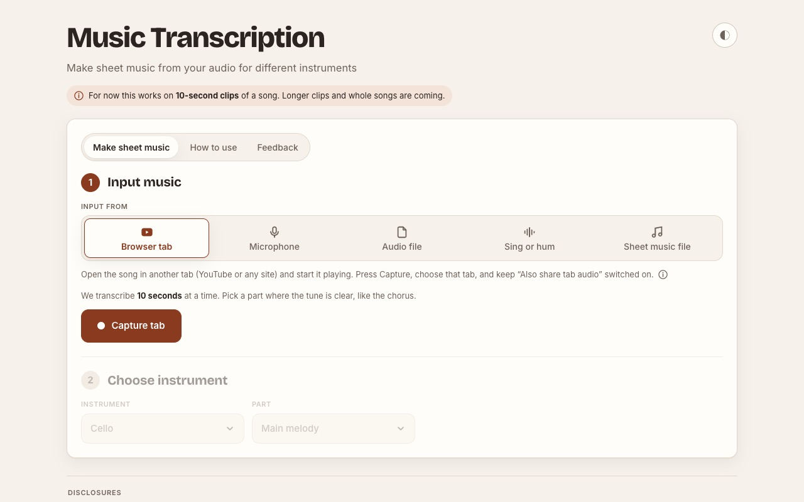
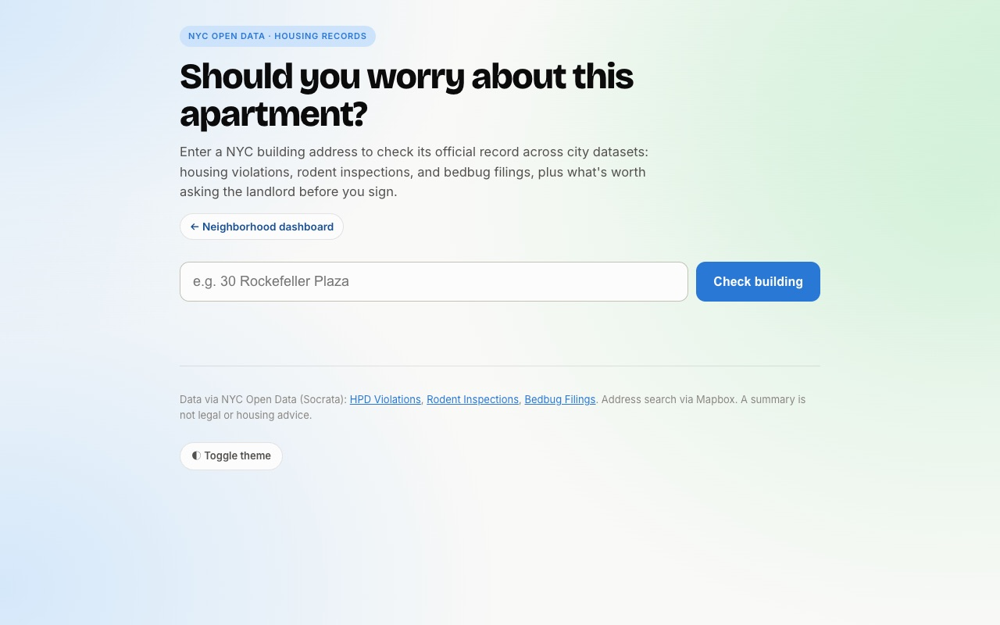

Things I’ve built on the side.

Turns a short clip of a song (from a browser tab, microphone, audio file or your own singing) into sheet music for cello, violin, piano or guitar, with playback, chord diagrams and guitar tab.
Open Music Transcription →
Enter a New York City building address to see its housing violations, rodent inspections and bedbug filings from NYC Open Data, plus what’s worth asking the landlord before you sign.
Open Rent Check →